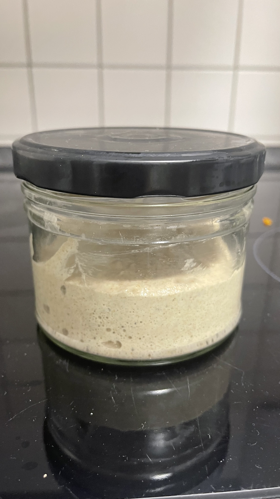
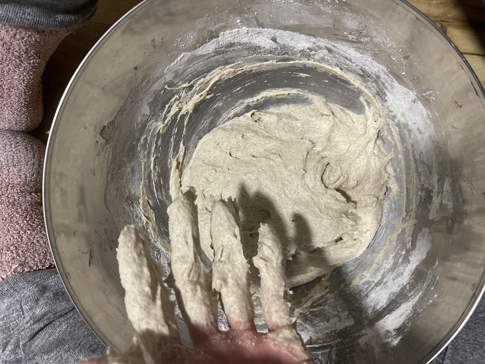
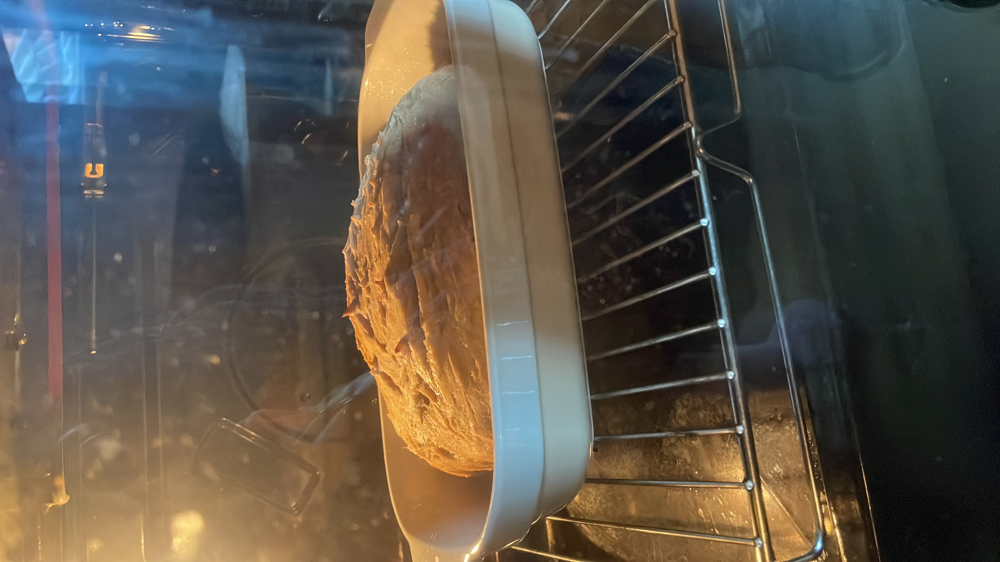
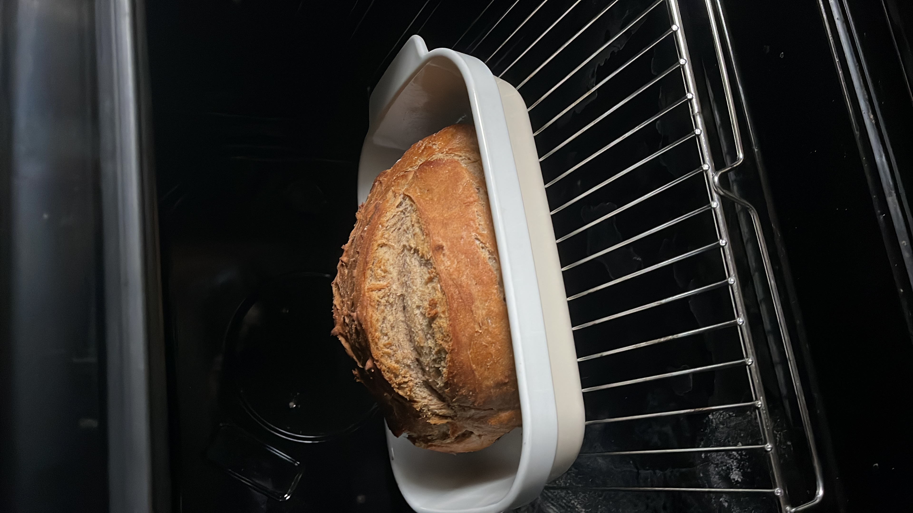

Homepage
How to make your own bread at home
Disclaimer: I am no expert at making sourdough this is the recipe from my first ever selfmade sourdough bread. But since the Odin Project asks you to make a recipe page, here we go!
First you need to make a sourdough starter
- Start with a clean and clear jar
- Put in 30g of lukewarm water and 30g of flour (I used rye since it is supposed to be easier to handle)
- Now mix very well
- Cover the jar but not airtight
- Let that sit for 24 hours at a warm place
- Now for the next 4-5 days take away 30g from the sourdough and feed it again with 30g of flour and 30g of water. By day 3 your sourdough should be starting to build bubbles and double in size.
Don't worry if it smells weird! It is normal for the sourdough starter to smell weird alcoholic/sour in the beginning. Usually the smell should settle to a nice yeasty dough smell by day 5.
But: if it smells like nail polish remover or you can see mold or a rose/orange liquid on top, throw it away and start again!
Great how you should have something that looks like this:

Alright now we can start making bread. My first one was a 50/50 wheat/rye flour sourdough bread
- Take 30g of your sourdough starter and mix it with 100g of water and 100g flour
- Let that sit for about 12 hours. sometimes it is less sometimes it is more. When it has doubled in size you can use it
- Now take mix all these ingredients together:
- the sourdough starter
- 250g rye flour
- 250g wheat flour
- 350g water
- 12g salt
It will be very sticky because of the rye!
Mine looked like this:

- Let the dough sit for the bulk fermantation. I did it overnight in the fridge as this is supposed to make your bread more aromatic but if you are impatient 1 hour in the warmth should do it as well
- Shape your bread and put it in your baking dish of choice

- Preheat your oven to 250°C and add a bowl of water so ther is steam
- Now bake your bread for 10 minutes with the steam
- Remove the water bowl and lower the temperatur to 200°C
- Finish baking your bread 45-50 minutes

- Let it cool down for 12-18 Hours
- Last but not least: Enjoy!!!